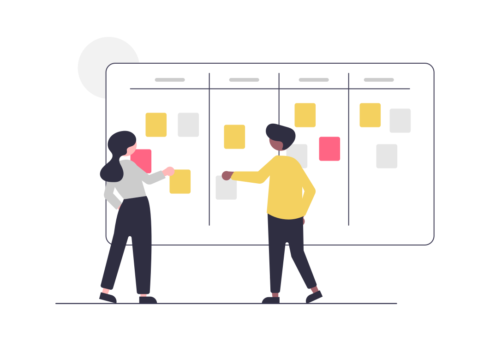
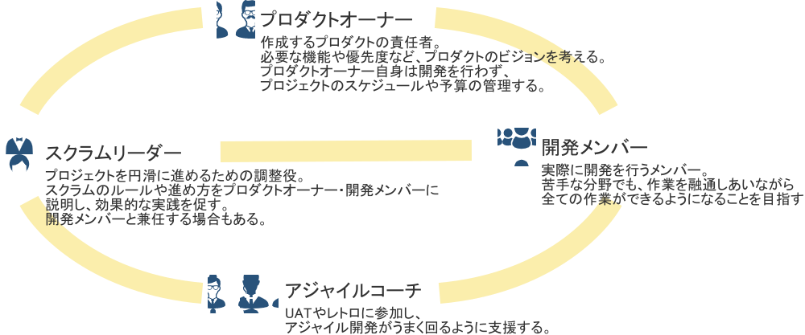

WIKI
金融事業本部アジャイル施策を通して得た知識、 模索しながら確立したチーム開発の記録。
Tool Description
ツール説明
目的に適したツールの導入を行い、
業務を効率化。
テレワークなど、遠隔での
アジャイル開発にも対応。
Start from scratch
ゼロからのアジャイル開発
ajile = 素早い・俊敏な
短い期間で優先度の高い機能から
開発を進める。
開発途中の軌道修正にも素早く対応。
不足しているスキルを補い合うことで
チームとしても成長できる。

メンバー構成
スプリントイベントについて
- スプリントは月曜日始まり、金曜日終わり。1スプリント2週間とする。
- 1SPの開発時間はその週の業務を考慮したうえで各自設定する（3時間程度）。
| 曜日 | 項目 | 概要 | 出席者 | 所要時間目安 | |
|---|---|---|---|---|---|
| 1 | 木(2週目) | UAT | 今回作成した画面（機能）について、POに確認していただく。 何かあればチャットで連絡する。 |
PO AC SL Dev |
20m |
| 2 | 木(2週目) | プロダクトバックログの作成 | POからの要件を元にバックログを作成する。 | PO AC SL Dev |
20m |
| 3 | 金(2週目) | レトロスペクティブ | KPTシートを使って振り返りを行う。 （良かったこと、良くなかったこと、次週の改善点） |
SL Dev |
20m |
| 4 | 金(2週目) | 次スプリントの計画 | 次スプリントに向けて以下作業を行う。 ①バックログの優先順位決め ②バックログ見積（ポイント制でざっくり） ③担当割り振り |
SL Dev |
15m |